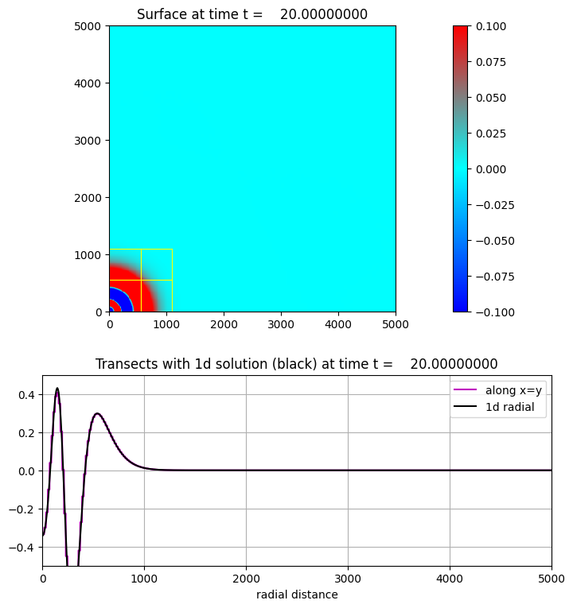

< < < Index > > >

Image source: /Users/rjl/clawpack_src/clawpack_master/geoclaw/examples/bouss/radial_flat/_plots/frame0002fig20.png
Other frames: 0 1 2 3 4 5 6 7 8 9 10 11 12 13 14 15 16 17 18 19 20 All Frames